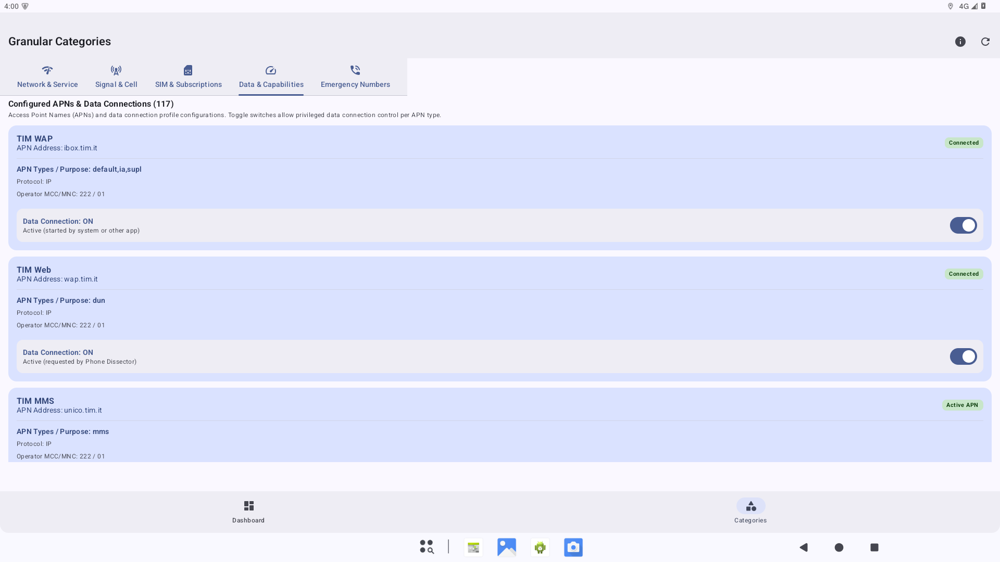

Advanced cellular network diagnostics and real-time telephony stack inspection for Android engineers, network testers, and power users.
Get it on Google PlayMonitor live service states (In Service, Emergency, Power Off), MCC/MNC operator identifiers, data connection state, and active radio technologies (5G NR, LTE, HSPA+, WCDMA, GSM).
Precise signal strength reporting (dBm, ASU) with tech-specific metrics: SS-RSRP/SS-RSRQ/SS-SINR for 5G NR; RSRP/RSRQ/RSSI/RSSNR/CQI for 4G LTE; and RSCP/EC/NO for legacy networks.
Detailed insight into primary and neighbor cells, including cell identification parameters (CID, eNodeB, gNodeB, TAC/LAC, PCI, EARFCN/ARFCN) and frequency band classification.
Full dual-SIM/multi-SIM slot analysis featuring SIM operator info, subscription IDs, slot index, ICCID data, voice/data roaming status, and real-time SIM hardware state monitoring.
Comprehensive breakdown of active and configured APNs, detailing APN addresses, protocol settings, type flags (default, supl, mms, ia), and active data call states.
Generate fully structured XML diagnostic reports containing all active telephony metrics, signal parameters, cell info, and APNs for instant sharing and post-analysis.
When Phone Dissector is signed with the target Android build's platform certificate, it unlocks privileged telephony capabilities that are not available to standard Play Store builds.
default—specifically supl, dun, and mms[cite: 1].

default,ia,supl, dun, and mms APNs[cite: 1].
Source Code or APK for Platform Signing: If you need the source code or an APK package to sign with your platform certificate, please contact the developer directly via email at dnlplm@gmail.com or through GitHub.